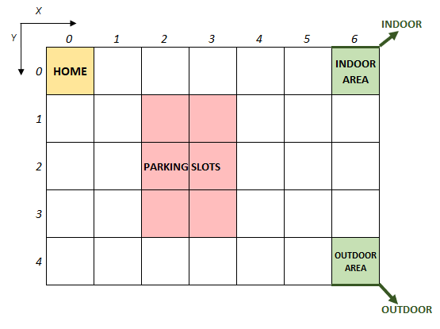
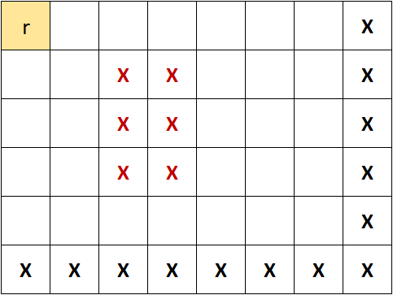
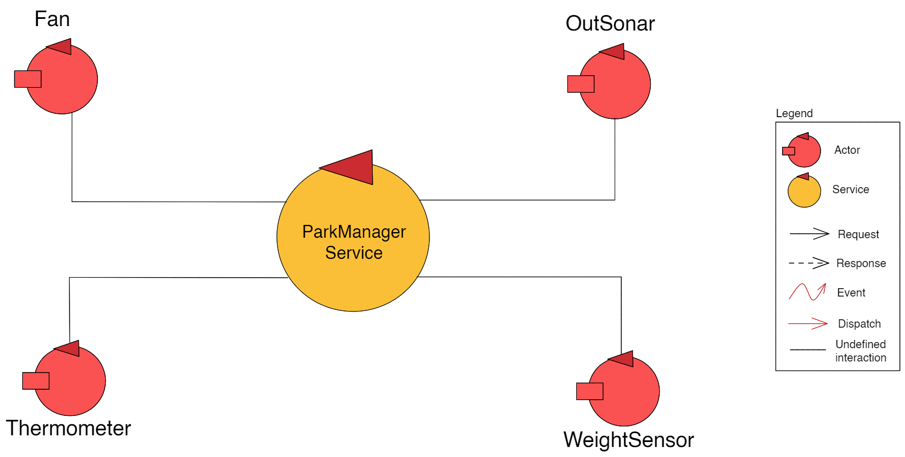

Introduction
Requirements
The document written by the customer with the requirements can be found here.
Requirement analysis
Dictionary
Nouns
ParkManagerService : The software system which will implement the required automation functions;DDR robot : Differential Drive Robot. Has the form of a square of side length RD; (link al file del robot da costruire)transport trolley : A DDR robot which is used to move cars from the INDOOR to the selected parking-slot;home : Starting position for the robot, located in the top-left corner of the environment. When the robot completes a request, and there are no further instruction, it will return in this position;parking-area : Empty environment outside which the robot cannot go. It includes INDOOR, INDOOR-area, OUTDOOR, OUTDOOR-area, parking-slots, thermometer and a fan;INDOOR : Cars use this gate to enter the parking-area;INDOOR-area : The transport trolley positions itself in this location to pick the car parked in front of the INDOOR. It is located inside the parking area;weightsensor : Sensor to measure the weight of the car, located in front of the INDOOR;OUTDOOR : Cars uses this gate to exit from the parking-area;OUTDOOR-area : The transport trolley positions itself in this location to leave the car just outside the OUTDOOR. Drivers pick them up there. It is located inside the parking area;outsonar : Sensor that detects cars outside the OUTDOOR;parking-slots : Dedicated slots inside the parking area where cars are left by the transport trolley. There are 6 parking-slots;thermometer : Sensor used to measure the temperature inside the parking-area;fan : A fan used to reduce the temperature inside the parking-area. It can be manually activated by the parking manager, or it can activate automatically. It can be either on or off;map : schematic representation of the parking-area, made by a grid of squares of side length RD;fixed obstacles : Immovable objects that the robot cannot traverse;parking-manager : Person in charge of the parking-area, who supervises the state and handles critical situations;client : Person using services of the parking-area. In particular, he will leave and pickup the car;ParkServiceGUI : GUI for parking clients to leave and pick up cars. It can be accessed by the client by using their own personal device;ParkServiceStatusGUI : GUI for the parking-manager to manage some aspects of the parking area;SLOTNUM : id of the parking slot given to the client, representing the location where the car will be placed by transport trolley. If equal to 0, no parking slots are availableTOKENID : sequence of characters. The characters should be generated in a manner that:- Two cars cannot have the same TOKENID while they are in the parking area
- It is impossible to guess the generated ID (cryptographically secure random)
- The generated ID must have a significative number of character
Alarm (to the parking manager): notification for the parking manager to signal if the OUTDOOR-area is not freed within DTFREE interval of time;current state : Collection of the following information:- current temperature inside the parking-area;
- current state of the fan (
on oroff ); - current state of the transport trolley (
idle ,working orstopped );
Verbs
leave the car : after receiving the SLOTNUM, the client leaves the car in the INDOOR-area and presses the CARENTER button on the ParkServiceGUI. He will then receive the unique TOKENID;pick up the car : the client uses the ParkServiceGUI to request the pick up, by sending the TOKENID previously received. After the car is moved to the OUTDOOR-area by the robot, the client takes the car and frees the area within DTFREE interval of time;start the fan : when the current temperature inside the parking-area exceeds TMAX, either the parking-manager starts manually the fan from the ParkServiceStatusGUI, or the fan starts automatically;stop the fan : when the current temperature goes below TMAX, either the parking-manager stops manually the fan from the ParkServiceStatusGUI, or the fan stops automatically;stop the robot : when the current temperature inside the parking-area exceeds TMAX, the parking-manager stops the robot, blocking any successive move until he starts the robot again;start the robot : after the parking-manager stops the robot, it remains stopped until restarted by the parking-manager;
Additional requirements and details
The following requirements are the result of further clarification with the customer:- The fan is automatically activated/deactivated by ParkManagerService. The parking manager cannot overtake control of it;
- The transport trolley cannot be stopped if TA <= TMAX;
- It is impossible that a customer reaches the INDOOR without having reserved a parking slot from the GUI;
- When client try to do acceptIN, if the transport trolley is stopped, the client should see an error message;
- When parking manager starts the transport trolley, it should continue the move it was doing before stop;
- Temperature is in Celsius and mass in kilograms;
- TMAX and DTFREE will be placed in a configuration file accessible by the application;
Map of the parking-area
The customer provides a library in Kotlin to represent the map of the parking-area.

Additional user stories
In order to explain better some edge cases, some examples were made with the customer, reported below.- Client1 notify his interest in entering his auto in the parking-area.
- Client2 submit the request to pick up his car but receive a notice message from the application stating that another client is in the parking phase or car pickup phase and that his request is in queue. The request will be served when the previous ends.
- Afterwards, Client3 wants to enter his auto in the parking-area but receive a notice message from the application stating that another client is in the parking phase or car pickup phase and that the web page will reload automatically as soon as the system is available again.
- Client2 and Client3 remain waiting.
- Client1 finish his parking phase.
- Without further interaction by Client2, ParkManagerService fulfills his request.
- The application of Client3 notify him that it is now possible to try to start the parking phase. At this point Client3 notify his interest in entering his auto again as if it was just arrived, without record of his waiting. There is not a queue of parking request but just an event of finish of the previous one.
List of requirements
Functional requirements
- The client can book a parking slot through ParkServiceGUI.
- The system sends the client an id of the parking-slot if there are slots available, otherwise it sends 0.
- The client notifies the ParkManagerService when he leaves the car in front of the INDOOR.
- The system can transport the cars from the INDOOR to the parking slots, and from the parking slots to the OUTDOOR by sending command to a transport trolley.
- The system should provide a unique identifier to the client (TOKENID), in order to retrieve the car later.
- The system must understand if a client's car is not in front of the INDOOR during F3
- The system can accept the request of a client to park in there only if there is at least one parking-slot available, the weigthsensor don't detect a car in front of the INDOOR, and the transport trolley is either at home or working
- The client can pick up the car by sending the TOKENID through ParkServiceGUI
- The system must infer the correct parking-slot from the corresponding TOKENID
- The system can accept the request of a client to pick up the car only if the TOKENID is valid, the outsonar don't detect a car in front of the OUTDOOR, and the transport trolley is either at home or working
- The parking manager can see the current state of the parking area through ParkServiceStatusGUI
- The parking manager should be able to stop the transport trolley when TA > TMAX through ParkServiceStatusGUI
- The parking manager should be able to start the transport trolley when it is stopped through ParkServiceStatusGUI
- ParkManagerService should start the fan when TA > TMAX and stop it when TA <= TMAX
- ParkManagerService should notify the parking manager when the OUTDOOR is not cleaned within DTFREE interval of time
- The trolley must go back to home when there are no more requests available
- The trolley should not walk over parking-slots or obstacles
Non-functional requirements
- The TOKENID generated must be secure and not easy to guess
- The system can handle one client at a time, putting on hold further requests
- It should be possible to swap between real sensor and simulated mock-objects with ease
System architecture
From the requirements given by the customer, we can deduce the structure of the system. It is a distributed system, with different devices communicating with each other in different places of the parking area. More specifically, we have:- The client devices to interact with the ParkServiceGUI;
- The parking manager device to interact with the ParkServiceStatusGUI;
- The ParkManagerService core;
- The transport trolley;
- The three sensors and the fan.
Transport Trolley
The transport trolley is the core entity of the project, as it is responsible for transporting the cars around the parking. The customer has provided us the model and the code of a basicrobot. The basicrobot is able to execute basic move commands, is a CoAP-observable resource, and can interact with a concrete robot. It is modelled as an actor. Because we are in a distributed system, and most likely the transport trolley will be on a separate node, the transport trolley will be modelled as an active entity, an actor, that wraps the basicrobot. The following graphs show the interaction between the transport trolley and the ParkManagerService. These basic interactions can be deduced from the requirements. Further interaction will be added if needed in the problem analysis.Other devices
We have different devices in the parking area: weight-sensor, outsonar, thermometer, fan. As they will all be on different nodes inside the parking area, we will also model these devices as actors. The customer has already provided us the code and the model of both sonar device and SonarAlone.c. The former is modelled as an actor, which is capable of emitting event and sending dispatch, while the latter is a simple program that read and writes as output the distance measured by the sensor. For the weight-sensor, the thermometer and the fan, the customer did not provide us with any code or strict requirements. The weight-sensor by requirements doesn't have to communicate the weight the car, but acts only as a detection device. The accuracy of the thermometer is one degree. The interaction between these devices and the ParkManagerService will be defined in the Problem Analysis.  The following image shows all the devices in the parking area, and how they are connected to each other. For the sake of completeness, we also provided a machine-readable model,
which highlights only the core aspects of the system, namely, the park phase and the pick-up phase.
For the sake of completeness, we also provided a machine-readable model,
which highlights only the core aspects of the system, namely, the park phase and the pick-up phase.
Problem analysis
Devices
A possible abstraction gap is the communication with all the different devices in the parking area:weight sensor & thermometer : since it is physically distant from the other components, the ParkManagerService should communicate with it via message-passing. It will then read the measurements from a physical or virtual device (mock object)outsonar : Ultrasonic sensor that measures the distance of an obstacle in front of it. The customer provides an example implementation of a program reading the distance from the sensor. The sensor is connected to the software via a cable and supports platforms like Arduino and Raspberry Pi.fan : can be controlled simply giving or removing power from it. A relay could be used to switch it on and off from a computertransport trolley : The customer provides a set of utilities to interact with the robot, both in qak and kotlin.
In addition, is available an API documentation to communicate with a virtual robot to simulate the moves of a real robot in a virtual environment.
The basic robot allows interacting with a virtual or some physical devices only changing a configuration file.
Communication between devices
Given the Requirements analysis it is now possible to define the interaction between all the devices in the System.outsonar : the customer provided us, besides the SonarAlone.c program, even some applications that sends events for every reading or every bunch of readings. To avoid unnecessary traffic on the net it is better to re-implement it, to make some processing on the outsonar and only send events when a car arrives or leaves. To make this choice, it reads at starting the minimum distance from a configuration file.weight sensor & thermometer : as for the outsonar, and to avoid a polling mechanism, those sensors send events only when the read value goes over or lower a specific value written in a configuration file in the device memory.fan : accepts only start/stop commands
There are some possible protocols for communicating between the different devices. The most relevant are:
CoAP : (a)synchronous one-to-one communication protocol based on a request-response model, has even some implementations that runs over DTLS, even if it seems not popular as webSockets on TLS.MQTT : asynchronous publish-subscribe model with a many-to-many mindset, not required in this scenarioHTTP : it is quite heavy and unidirectional, but could be used for example for the fan, that should only receive commands and reply with an ok/non-ok message. On the other hand, in this way, to provide a layer of encryption, the fan should have an HTTP server and a TLS certificate that should be renewed when expired, complicating the maintenance.WebSockets : lighter than HTTP but still heavy. Bi-directional and supports encryption with minimum effort. Because of his bi-directionality, only the Service should act as a server and the other devices could easily connect to it and exchange messages, requiring only one server and one TLS certificate.
In this case, the Service has to be located in the neighborhood of all the sensors, while with encryption it could be located everywhere and provide his services with a reduced risk of in-place maintenance.
At this point, the two main alternatives are CoAP and WebSockets.
GUI interaction
+qualcosa sul planner (intanto qui poi sopra)Logical architecture
The image above represents the logical architecture of the system.The two GUIs are represented in a different context because the ParkManagerService could expose some APIs completely independent of the GUIs, that can be served even by different machine or installed as mobile apps on users' devices. A scheme of the API in OpenAPI format is available here.
It is also available an executable model of the system written in qak language.
Test plans
- client request a slot, and it's free: receive slotnum != 0 (RF1)
- client request a slot, but there's no space: receive slotnum == 0 (RF1)
- client request a slot, but there's still a client before him: new client wait
- client press CARENTER, check: slot become occupied, check the behaviour of the system whenever the weightsensor detect a car
- client pickup no error, check: slot become free, tokenid correspond, free outdoor area in tot time
- client pickup, but the token does not correspond, error
- client pickup, but there's still a client before him: new client wait
- manager checkstatus, receive sensible value
- temperature over TMAX, check if robot stop
- manager start and stop robot
- manager start and stop fan
testRequestSlotThe client request a slot and there is one slot free.Conditions
|
testRequestSlotNoSlotsFreeThe client request a slot but there is not a free slot.Conditions
|
testRequestSlotIndoorOccupiedThe client request a slot, but there is still a client in the INDOOR-areaConditions
|
testPressCarEnterThe client request a slot, but there is still a client in the INDOOR-areaConditions
|
testClientPickupThe client request to pick up his car by submitting the tokenID, and then leaveConditions
|
testClientPickupOutdoorOccupiedThe client request to pick up his car by submitting the tokenID, but the OUTDOOR-area is occupiedConditions
|
testClientPickupWrongTokenThe client request to pick up his car by submitting the tokenID, but the tokenID is not validConditions
|
Work plan
We can assess the time needed to implement all the feature discussed above as follows:
Total work estimate: 6 days and 4.5 hours.
- Communication with devices (total 2 days)
- Sonar: 3h
- Fan: 1h
- Thermometer: 2h
- Weight sensor: 2h
- Transport trolley: 1 day
- ParkManagerService core: 2 days
- API endpoints for 2 GUI: 3h
- ParkServiceGUI (total 10h)
- Design (including chose of theme): 3h
- Realization (only client side): 7h
- ParkServiceStatusGUI (total 7.5h)
- Design (same theme of above): 1.5h
- Realization (only client side): 6h
Total work estimate: 6 days and 4.5 hours.